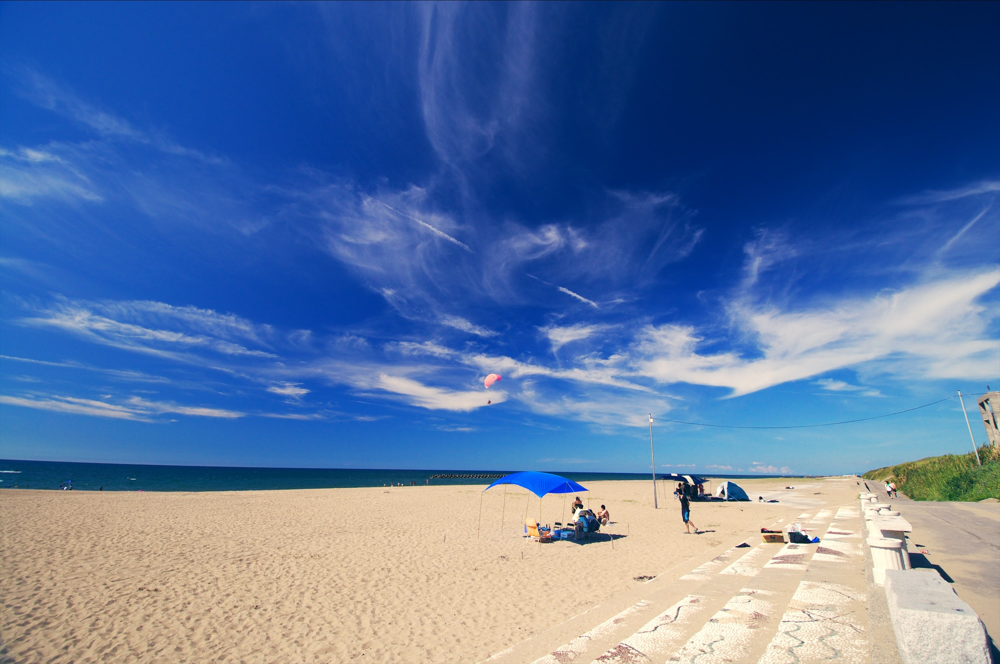
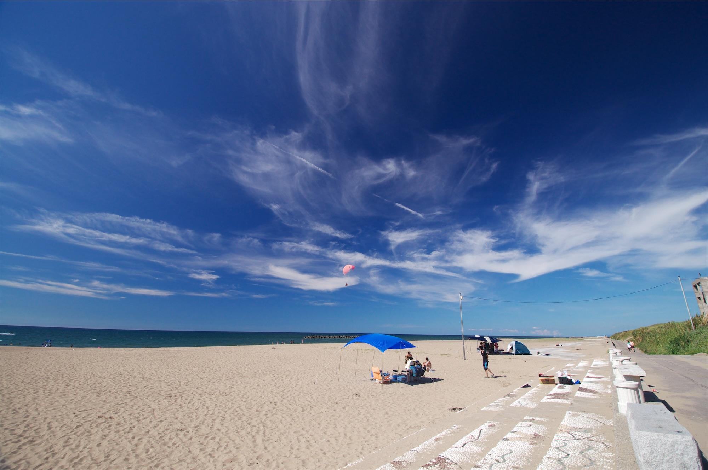
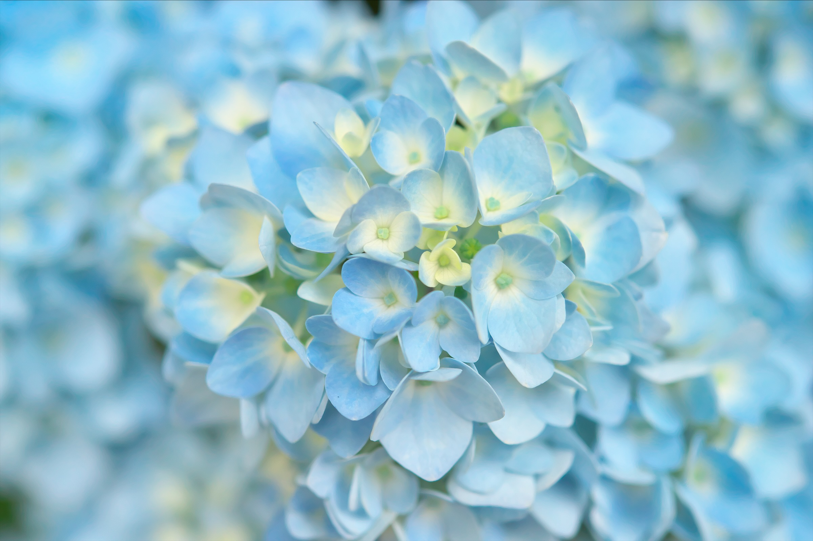
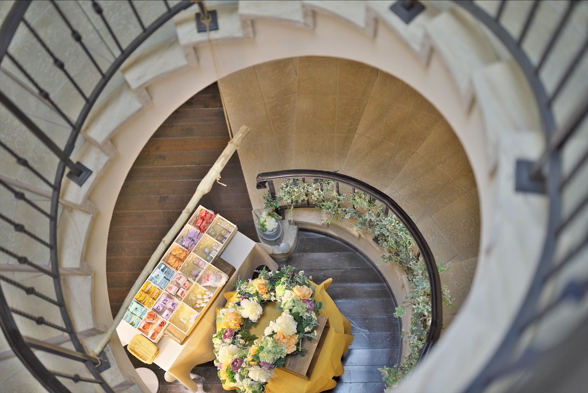

HDR トーン
白く飛ばさない。
黒く潰さない。
ハイライトの回復とシャドウの持ち上げを、明るさの局所的なマスクで。コントラストは色相を崩さない自前のトーンカーブで ±120 まで。
Rawgenzo は、Apple Silicon のために書かれた RAW 現像ソフトです。macOS の Core Image で RAW を読み、Metal で補正する。余計なものを挟まず、写真と向き合う時間だけを残しました。
Native
Apple Silicon で
ネイティブに動作
21
すぐに使える
LUT を同梱
7
種類の
構図ガイド
16bit
TIFF と
HDR HEIF で書き出し
ルック
フィルム風・シネマ風・モノクロ・ノスタルジックの 4 つの組み込みルックに加え、.cube 形式の 3D LUT をフォルダに置くだけで、自分のルックを増やせます。効き具合は「強さ」で 0〜100% まで。すぐに試せる 21 個の LUT も付属しています。


付属の LUT を、Rawgenzo のルックと同じ方法(sRGB ガンマで 3D LUT を適用)で写真に掛けた例です。元の写真は撮影時の JPEG で、Rawgenzo で現像したものではありません。
機能
HDR トーン
ハイライトの回復とシャドウの持ち上げを、明るさの局所的なマスクで。コントラストは色相を崩さない自前のトーンカーブで ±120 まで。
非破壊編集
調整は RAW の隣の小さな JSON に自動で保存。いつでも最初からやり直せます。
DSC03356.ARW.rawgenzo.json { "cameraProfileID" : "sony.ilce-7sm3", "settings" : { "exposure" : 0.5, "contrast" : 0.3, "look" : { "id" : "builtin.film", "strength" : 0.7 } } }
表示とディテール
写真の 1 ピクセルを画面の 1 物理ピクセルに。ピンチやダブルクリックで拡大し、シャープネスとノイズ除去を細部で確かめられます。

カーソルを乗せて拡大クロップと傾き補正
±15° の傾き補正。枠は常に回転後の画像の内側に収まり、四隅に何も無い部分が写り込みません。
レンズ補正
ARW に記録された補正値から、周辺減光・歪曲・倍率色収差を補正。初めは撮影時のカメラの設定に従い、写真ごとに切り替えられます。
書き出し
JPEG・HEIF・16bit TIFF・HDR HEIF。色空間は sRGB / Display P3 / Adobe RGB。ファイル名は撮影日や連番、レンズ名を組み合わせたテンプレートで。
{date}_{seq:3}
20260621_001.jpg
構図ガイド
三分割から黄金螺旋まで 7 種類。重ねて表示でき、色で見分けられます。クロップ中は枠の中に描かれるので、切り抜きながら構図を詰められます。

コマンドライン
アプリと同じ現像エンジンを使う rawdev を同梱。フォルダを渡せば中の RAW をまとめて現像します。出力先や形式はアプリの書き出し設定と共有。
$ rawdev check Core Imageの対応カメラ数: 932 対応: Sony Alpha ILCE-7S III $ rawdev name "{date}_{model}_{seq:3}" ~/Pictures/ARW DSC03356.ARW → 20260621_ILCE-7SM3_001 DSC03402.ARW → 20260621_ILCE-7SM3_002 DSC03451.ARW → 20260622_ILCE-7SM3_003 $ rawdev develop ~/Pictures/ARW --hdr 0.6 --look builtin.film $
Photographs by Yukimitsu IZAWA
仕様
.cube 3D LUT~/.Rawgenzo/はじめる
ビルド済みのアプリは配布していません。Xcode の入った Mac で、次のコマンドを実行してください。Rawgenzo.app がビルドされ、/Applications に入ります。
git clone https://github.com/Rawgenzo/Rawgenzo.git
cd Rawgenzo
./scripts/make-app.sh --install開発中のソフトウェアです。現在の制約は README の「現状について」をご覧ください。